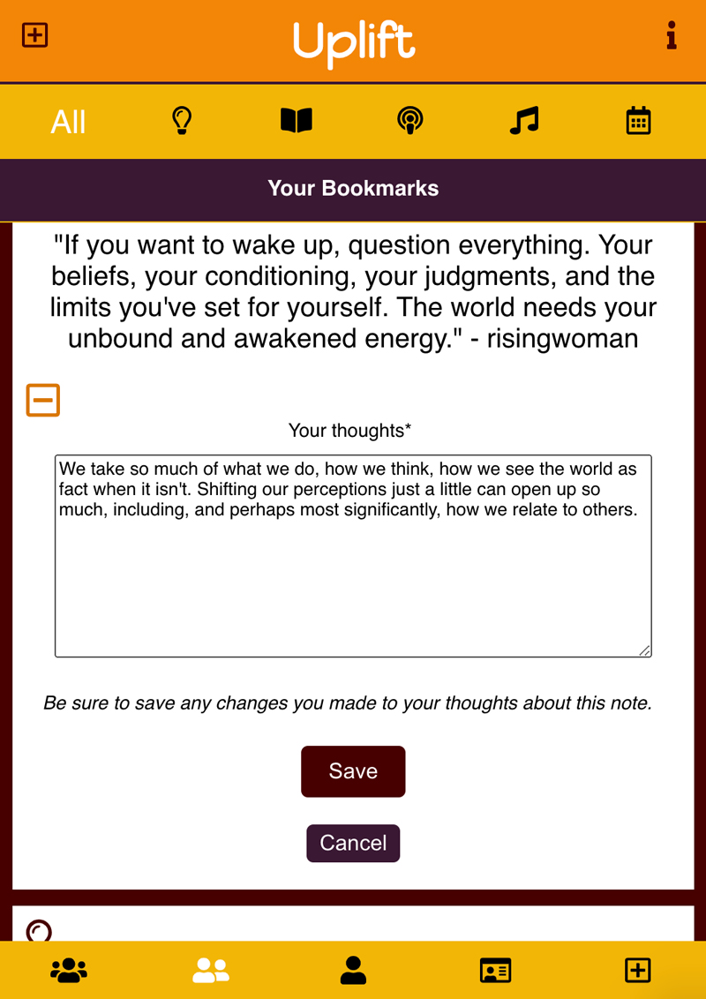
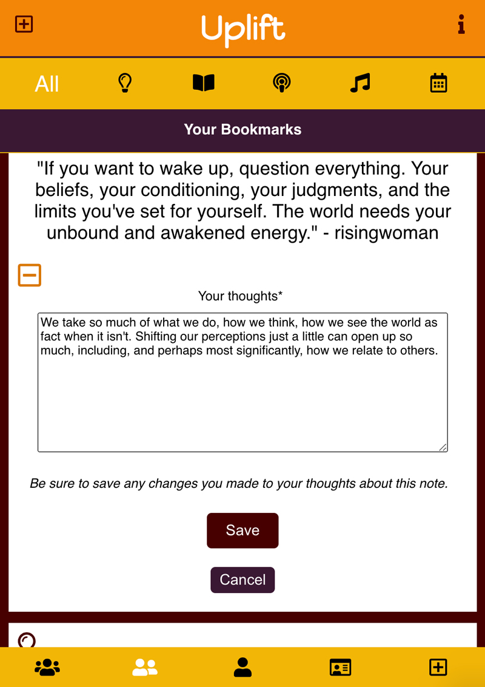

Uplift
Description
Uplift is a social media app where users can go to find positive, uplifting ideas, books, music, events, and podcasts. Users can create posts, follow other users, and bookmark posts with their private comments.
Live ViewMy Role
- Full-stack
Developer - Designer
- Product
Developer
Technologies Used
- React
- PostgreSQL
- Node.js
- HTML5
- CSS3
- JavaScript
- REST APIs
- Mocha
- Jest
- Illustrator
- Photoshop
 

Process
Uplift is a full-stack application. The database was set up using Postgres, the client-side application was built using React and the server-side application was built using Node.js. User uploaded images are stored in Cloudinary. Testing was performed using Mocha and Jest.
REST API endpoints were created to allow the client-side app to make GET requests for all posts, posts by user, posts by who the user follows, and posts that are bookmarked. In order to make these requests SQL queries to combine data from mulitple tables were created. In addition, POST, PATCH, and DELETE requests for creating posts, updating user comments on their bookmarked posts, and deleting their posts were set up.
Filter and search components were created so the user can filter posts by type of post and/or user type (themselves, who they follow, or all users) or search posts by username. In addition, to optimize the UX, buttons were created on the New Post form so that only fields specific to the type of post being created were visible to the user. Tooltips for the different icons and different colors for active icons were added to also increase user experience.
One of the most challenging aspects of the development of the app was allowing for users to upload images when creating a new post. Posts with images will first make a request to the Cloudinary API to store the image, retrieve the path to the image saved in Cloudinary, and then add the new post information with the image path to the database.
Future Versions
The next version of the app will allow for new users to sign up and existing users to sign in and update their account information. Other future versions will allow users to update their posts and add infinite scrolling functionality to UIs with posts.